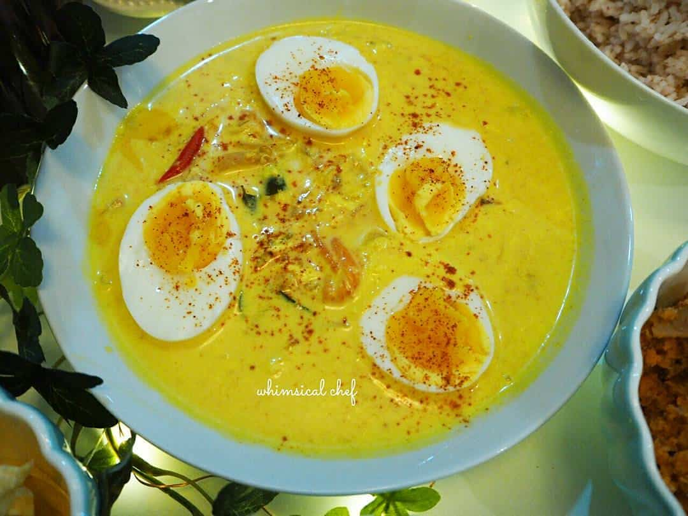
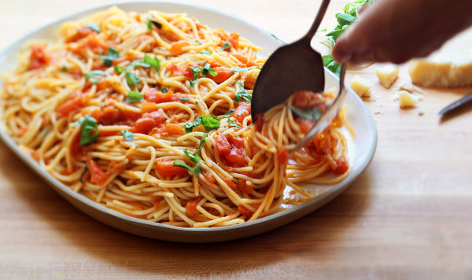
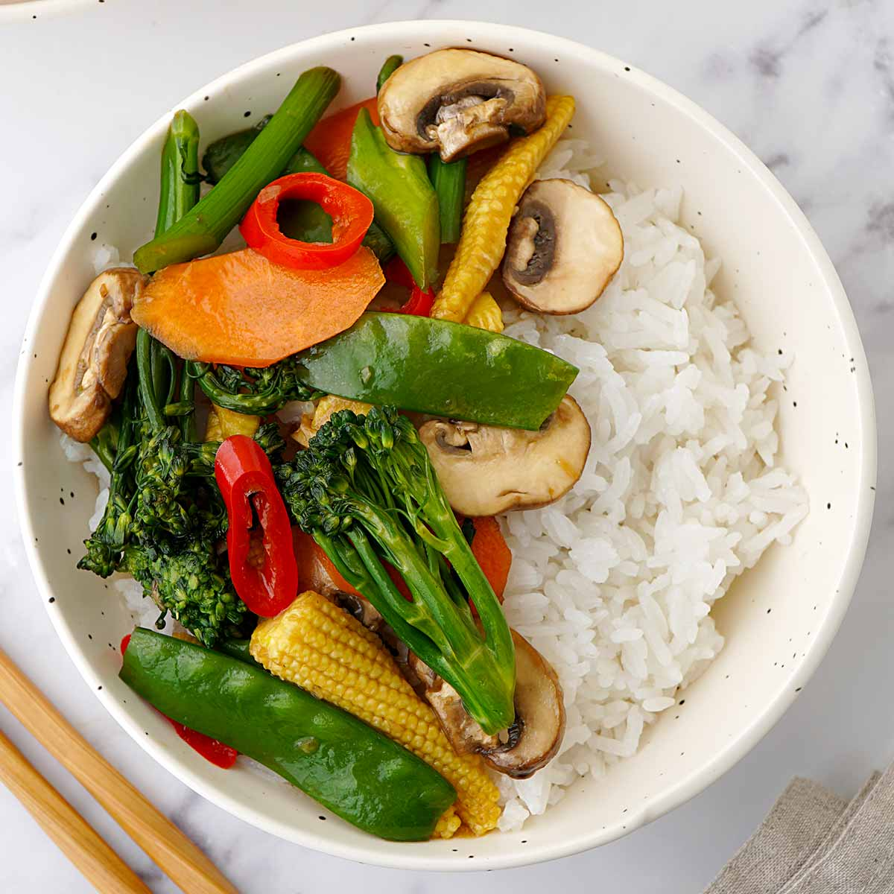

Sri Lankan Egg Curry

Ingredient
- Eggs
- 1 onion, finely chopped
- 2 tomatoes, chopped
- 2 cloves garlic, minced
- 1-inch ginger, grated
- 1 teaspoon curry powder
- 1/2 teaspoon turmeric powder
- 1/2 teaspoon chili powder
- 1 cup coconut milk
- Salt to taste
Cooking Instructions
- Step 1: Boil the eggs until hard-boiled, then peel and set aside.
- Step 2: Heat oil in a pan, sauté onions until golden brown.
- Step 3: Add garlic, ginger, curry powder, turmeric, and chili powder. Cook for 2 minutes.
- Step 4: Add tomatoes and cook until softened.
- Step 5: Pour in coconut milk, bring to a simmer, and season with salt.
- Step 6: Gently add the boiled eggs and simmer for 5-7 minutes.
- Step 7: Serve hot with rice or bread.
Italian Tomato Basil Pasta

Ingredient
- 8 oz pasta of your choice
- 4-5 ripe tomatoes, chopped
- 3 cloves garlic, minced
- 1/4 cup fresh basil leaves, chopped
- 2 tablespoons olive oil
- Salt and pepper to taste
- Grated Parmesan cheese (optional)
Cooking Instructions
- Step 1: Cook pasta according to package instructions, drain, and set aside.
- Step 2: Heat olive oil in a pan, add garlic and sauté until fragrant.
- Step 3: Add chopped tomatoes, cook until they break down and form a sauce.
- Step 4: Season with salt and pepper, stir in fresh basil.
- Step 5: Toss the cooked pasta in the sauce until coated evenly.
- Step 6: Serve hot with grated Parmesan cheese on top if desired.
Indian Chickpea Curry (Chana Masala)

Ingredient
- Eggs
- 2 cups cooked chickpeas
- 2 tomatoes, chopped
- 2 cloves garlic, minced
- 1-inch ginger, grated
- 1 teaspoon cumin seeds
- Fresh cilantro for garnish
- 1/2 teaspoon chili powder
- 1 cup coconut milk
- 1 teaspoon coriander powder
Cooking Instructions
- Step 1: Heat oil in a pan, add cumin seeds, let them splutter.
- Step 2: Add onions and sauté until golden brown.
- Step 3: Stir in garlic, ginger, and cook for a minute.
- Step 4: Add tomatoes, cook until softened and oil separates.
- Step 5: Add turmeric, coriander powder, chili powder, garam masala, and salt. Mix well.
- Step 6: Add cooked chickpeas and simmer for 10-15 minutes.
- Step 7: Add cooked chickpeas and simmer for 10-15 minutes.
Thai Vegetable Stir-Fry

Ingredient
- Assorted vegetables (bell peppers, broccoli, carrots, snow peas), sliced
- 2 cloves garlic, minced
- 1-inch ginger, grated
- 2 tablespoons soy sauce
- 1 tablespoon oyster sauce (optional)
- 1 tablespoon vegetable oil
- Salt and pepper to taste
- Cooked rice for serving
Cooking Instructions
- Step 1: Heat oil in a pan or wok over high heat.
- Step 2: Add garlic and ginger, stir-fry for 30 seconds.
- Step 3: Add vegetables and stir-fry for 3-5 minutes until they're tender yet crisp.
- Step 4: Pour in soy sauce and oyster sauce, if using. Toss well.
- Step 5: Season with salt and pepper.
- Step 6: Serve hot over cooked rice.